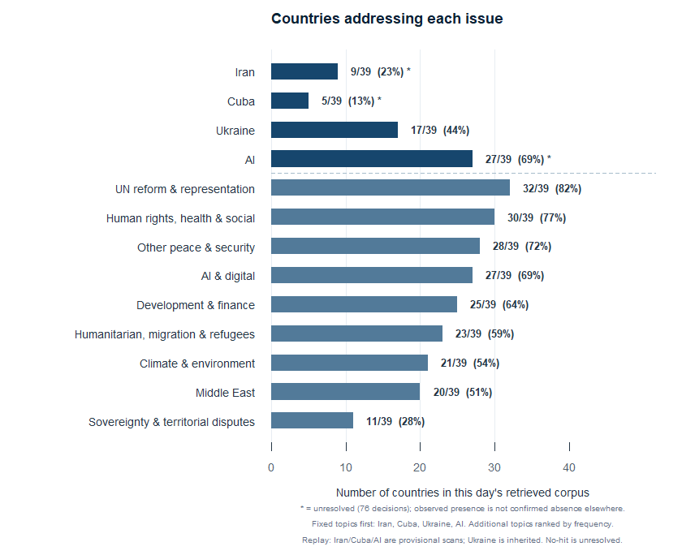
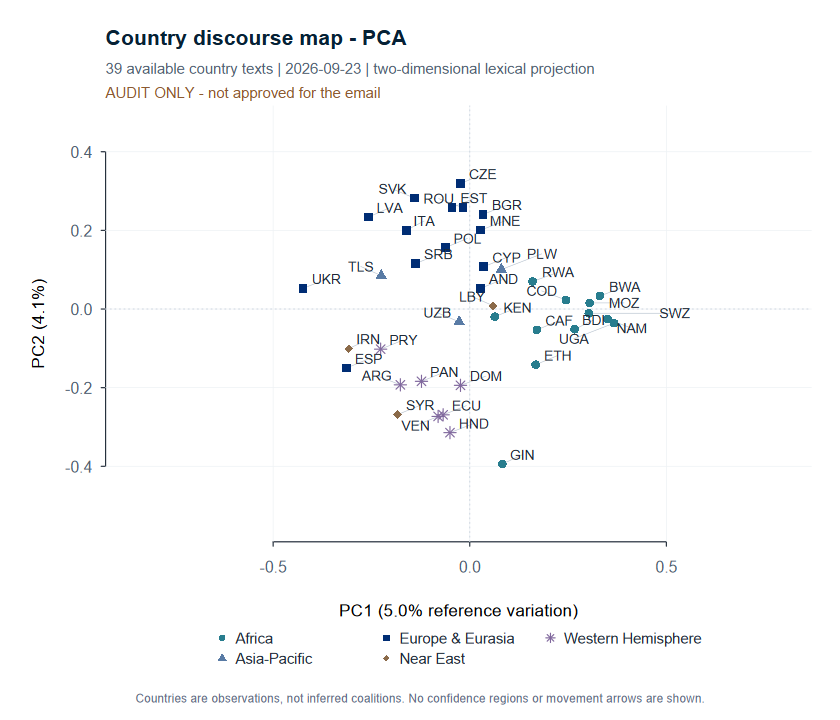
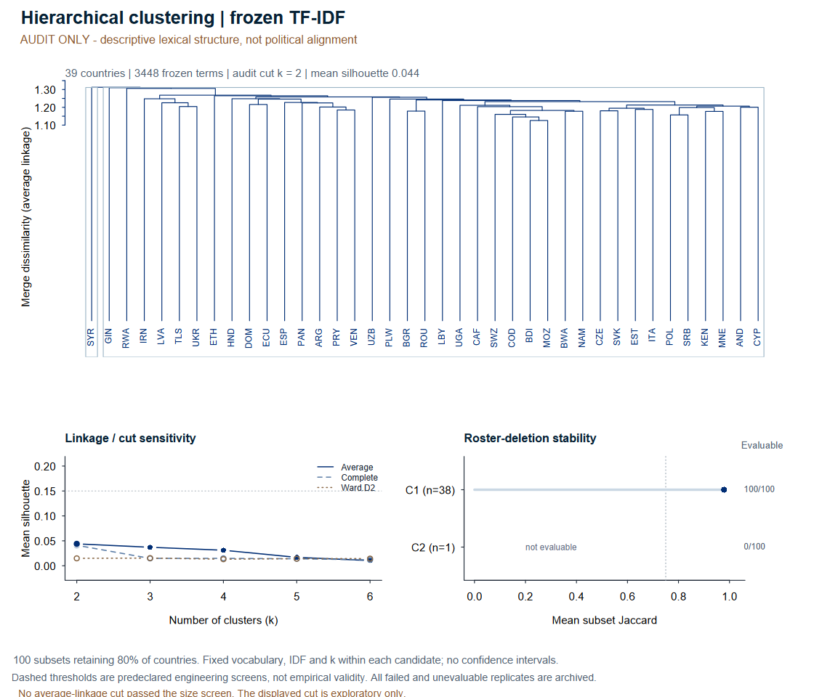
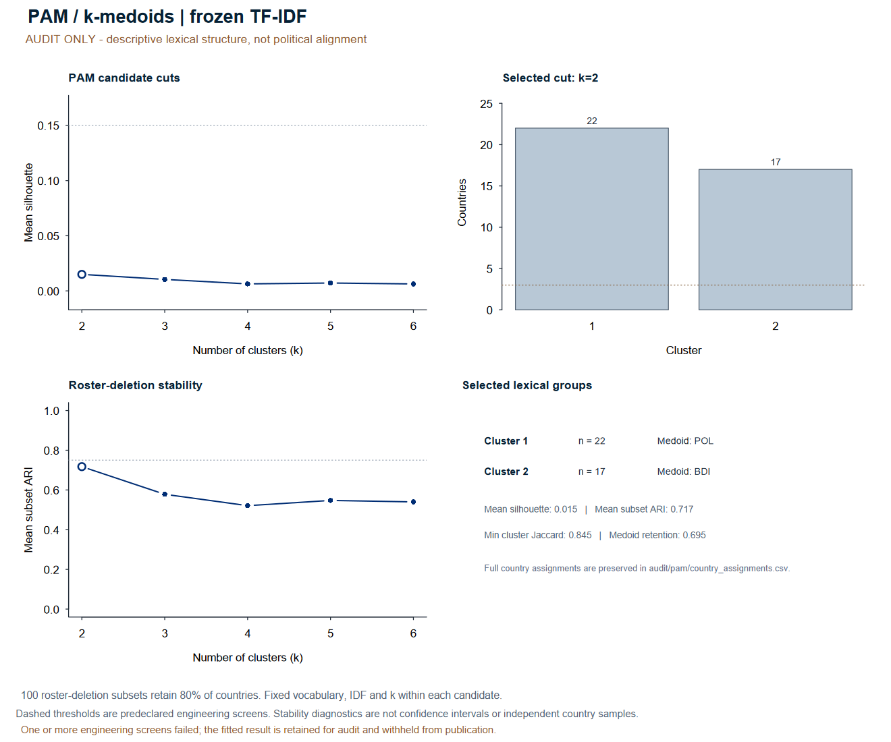

DESIGN REVIEW / 01
A briefing you can refine
23 September 2026 source replay · 39 country statements · 42 method records · five analytical slots
Review the design, with the evidence boundary visible.
The actual draft is linked below. This separate gallery exposes withheld research charts for visual review. It does not add them to the released email or turn them into validated findings.
Controls affect this gallery; saved email and chart pixels stay unchanged.
RESEARCH VIEW 01 · AUDIT ONLY
Issue evidence
Counts use the inherited and provisional replay codebook; they are not human-validated relevance estimates.

RESEARCH VIEW 02 · AUDIT ONLY
Country language map
PCA failed release checks on this replay. Audit-only lexical geometry; proximity is not political alignment.

RESEARCH VIEW 03 · AUDIT ONLY
Grouping diagnostics
Quality-withheld. Group labels have no geopolitical meaning.

RESEARCH VIEW 04 · AUDIT ONLY
Exemplar diagnostics
Quality-withheld. Medoids are textual exemplars, not representative political positions.

What the new methods actually returned
All six additions remain audit-only. The table distinguishes computed outputs from blocked and quality-withheld results.
| ID | Method | Replay state |
|---|
| M08 | K-means | Withheld: quality checks |
| M31 | Lexical network (stance layer unavailable) | Computed · audit only |
| M32 | Louvain communities | Withheld: quality checks |
| M33 | Leiden communities | Withheld: quality checks |
| M34 | Spectral clustering | Blocked: data requirements |
| M36 | Network structure metrics | Computed · audit only |
Your visual refinements
Describe changes to the masthead, colours, icons, typography, chart labels, layout or amount of detail. This page does not submit anything.